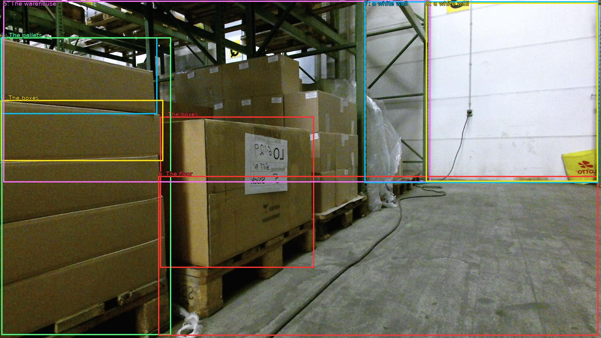

The image shows a large warehouse with multiple stacks of cardboard boxes on wooden pallets. The boxes are stacked on top of each other and appear to be of different sizes and colors. The pallets are arranged in a neat and orderly manner. The warehouse has a high ceiling with metal beams and a yellow caution sign on the right side. The floor is made of concrete and there is a white wall in the background. The overall atmosphere of the warehouse appears to be clean and well-maintained.

Original · Caption raw · Grounding raw · Koordinate
Številke so lokalni ID regije. Dolge slikovne oznake so skrajšane; spodaj so celotne fraze. Napovedane regije se lahko prekrivajo ali opisujejo skupine.
| ID | Celotna fraza | bbox xyxy |
|---|---|---|
| 1 | The boxes | [511.67999267578125, 372.0600280761719, 1003.199951171875, 855.9000244140625] |
| 2 | The boxes | [2.879999876022339, 119.34000396728516, 502.0799865722656, 364.5] |
| 3 | The boxes | [2.879999876022339, 319.1400146484375, 521.2799682617188, 514.6199951171875] |
| 4 | The pallets | [4.799999713897705, 119.34000396728516, 546.239990234375, 1070.820068359375] |
| 5 | The warehouse | [10.559999465942383, 2.700000047683716, 1375.679931640625, 582.6600341796875] |
| 6 | The floor | [505.91998291015625, 562.1400146484375, 1911.3599853515625, 1072.9801025390625] |
| 7 | a white wall | [1164.47998046875, 4.860000133514404, 1911.3599853515625, 584.8200073242188] |
| 8 | a white wall | [1360.3199462890625, 8.100000381469727, 1909.43994140625, 580.5] |